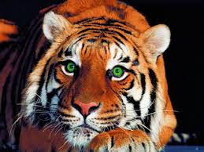
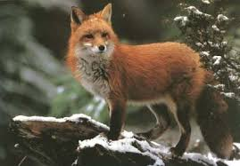

| Etcil hayvanlar et ile beslenen canlilara denir.Bunlara ornek olarak kaplan,aslan,cita gibi hayvanlari gösterebiliriz.Etcil hayvanlar genellikle yirtici tiplerdir. Kaplan , Aslan vb. çok fazla etcil yirtici hayvan vardir . Hatta bazi baliklar bile etcildir.Latince "Carnivora": caro, carnis (et) ve vorare (yutmak); yani "Et yutanlar" anlamina gelir. Ama aslinda etcil beslenme takimin butun uyeleri icin en onemli beslenme degildir. Etciller takimi iki alt takıma ayrilir: köpegimsiler ve kedimsiler. Eski siniflandirmalara göre karasal- ve sucul yirticilar iki ayri takima konulurdu. Günümüzün biliminde bu iki takim birlestirilmis ve sucul yirticilar etcillerin köpegimsi alt takimi icerisinde yer almistir.Etciller takiminin uyeleri cok cesitlidir ve ornegin kuyruksuren ile mors gibi birbirlerine hic benzemeyen turleri kapsar. Suda yasayan fokgiller ve diger sucul memeliler, karada yasayan butun buyuk etcil memeliler ve cesitli orta ve kuçuk boyda yirtici memeliler bu takima aittir. Takimdaki cesitlilik kaba ve cevik yapili ayilardan, zarif yapili kedilere kadar uzanir. Olculerin arasindaki en buyuk fark, takimin en küçük uyesi olan ve sadece 35-70 gram agirliga varan fare gelincigi'nden agirligi 4 tona kadar varabilen ve en buyuk memelilerden birisi olan deniz fili'nin arasindadir.
|